| 日付 | 2026年7月25日（土） |
|---|---|
| 山域 | 八ヶ岳 |
| メンバー | 家族（妻） |
| 山行形態 | 前夜泊日帰り |
| アクセス | 車 |
| ルート (Map) | 美し森駐車場 (5:43) - (6:12) 羽衣の池 - (7:57) 牛首山 - (9:54) 真教寺尾根分岐 - (10:13) 赤岳 (10:50) - (11:47) 大天狗 - (12:32) 小天狗 - (13:25) 県界尾根登山口 - (13:53) 美し森駐車場 |
赤岳東側の真教寺尾根と県界尾根は、日帰り周回コースになっていることを最近知った。
ちょっとルートが長いので、初めての夫婦での車中泊を行い、
この周回コースを歩いてみることにする。
早朝、美し森駐車場を出発。標高1470m。
仕事が終わって家事をして自宅を出発したのが20時半。
この地に着いて寝る準備をして寝られたのが23時半。
本日は5時半起床。金曜夜発だと思ったより睡眠時間がとれない。
本当はもっと早く出発したかったのだが。
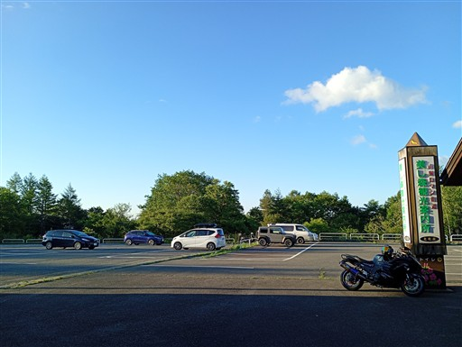
この辺りは観光地。美しの森まで木段が整備されている。
早朝から登山者ではなく観光客の姿も見られるから驚きだ。
早起きしたら日の出も見られたのだろう。
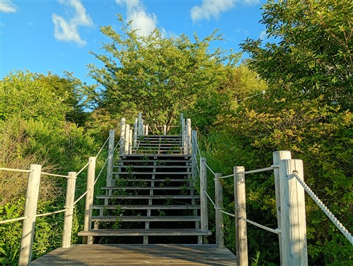
朝は快晴。富士山がきれいに見えている。
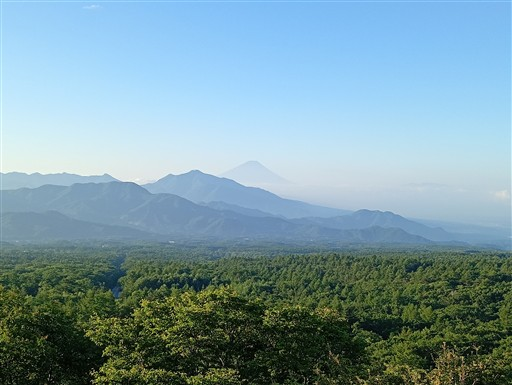
こちらは南アルプス。
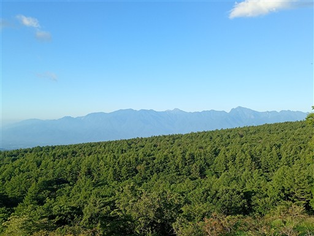
美し森に到着。なんと、赤岳に雲が引っかかっている。
こんな早朝から不穏な雰囲気。富士山も南アも完璧だったのに。
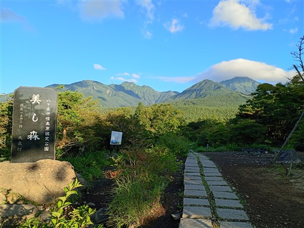
赤岳の中腹を歩くコースがあるみたいだ。
この先、歩くことは無いと思うがちょっと興味がある。
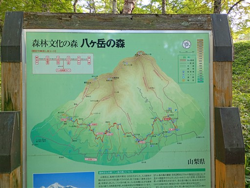
登りにくい階段が続く。
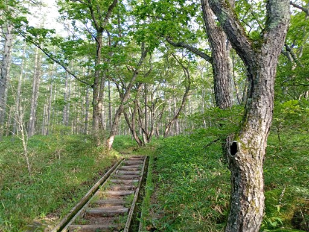
羽衣の池に到着。
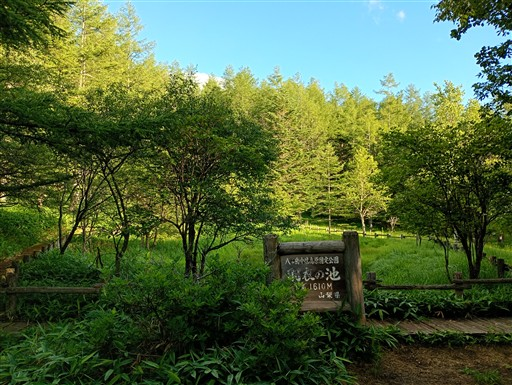
小さな池。池というより湿地帯という雰囲気。
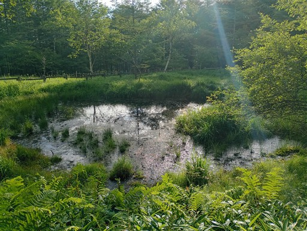
ここから笹薮の中の道になる。先行者がいるはずなので朝露はそんなに酷くないが
想定外の笹薮は結構鬱陶しい。
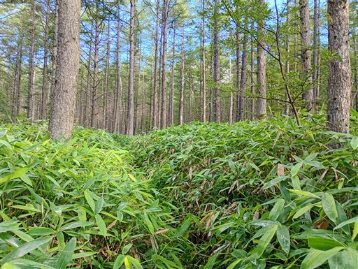
清里テラスのリフト。9時に営業開始らしい。
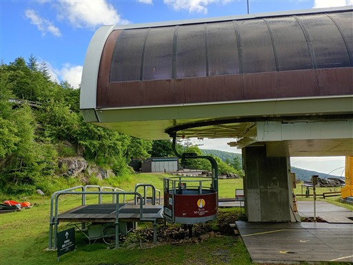
ちょっと覗いてみる。テラスからは絶景が広がっている。
もう少し早い時間から営業したらみんな喜びそう。
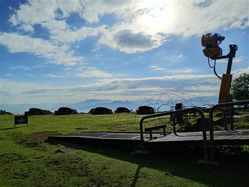
賽ノ河原に到着。
雲が増えているが、赤岳山頂は姿を現した。
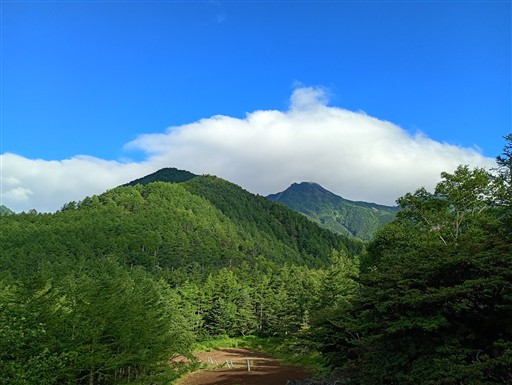
登山道は樹林帯の中で、ほとんど展望は広がらない。
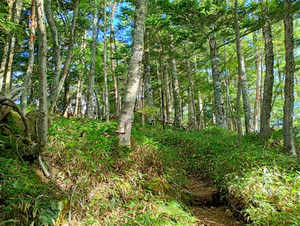
途中でときどき展望スポットがある。
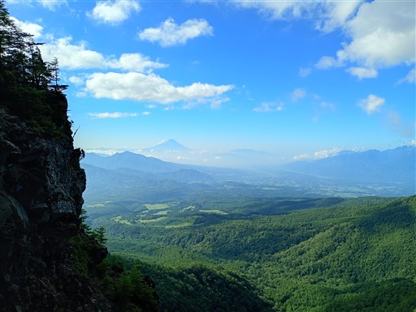
牛首山に到着。標高2280m。
この尾根は下りがほとんどなく、山と言っても尾根上の小さな突起だ。
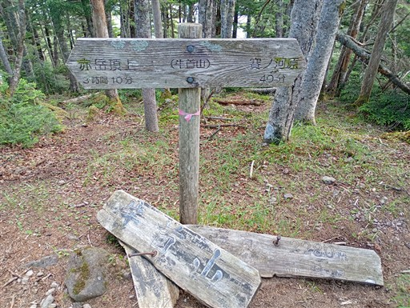
八ヶ岳らしい樹林帯が続く。
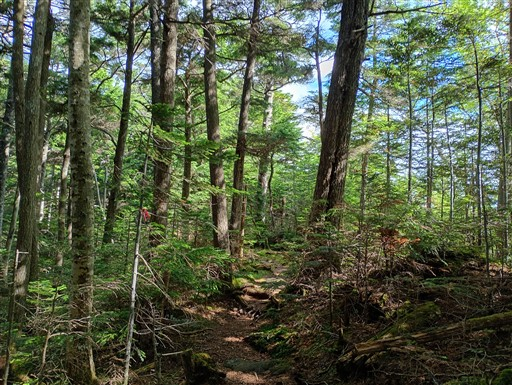
木が折れている。縦に裂けている姿は初めて見た。
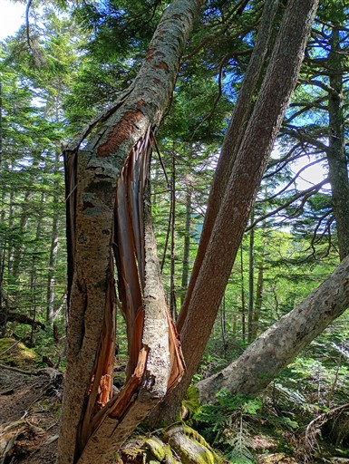
斜面の向こうに権現岳が見えてきた。
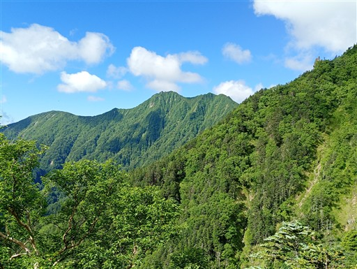
岩場が現れだす。
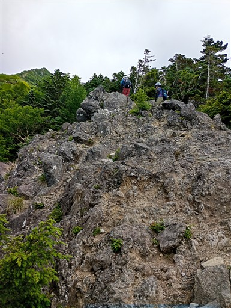
歩いてきた真教寺尾根を見下ろす。
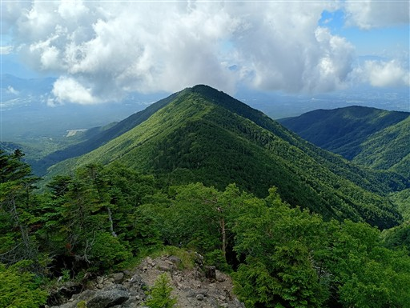
爽快な岩尾根。
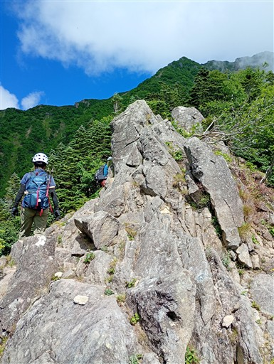
大天狗と小天狗の岩峰。
あの尾根もバリエーションルートとして歩かれているらしい。
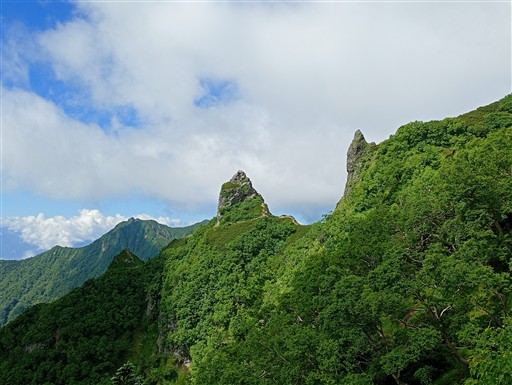
ここから岩場が連続する。傾斜も一気に急になる。
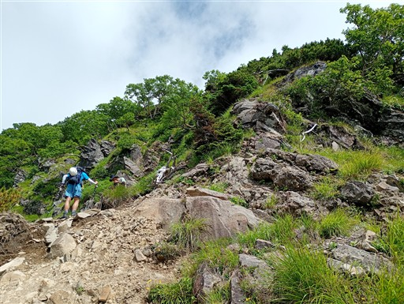
初っ端の鎖場。
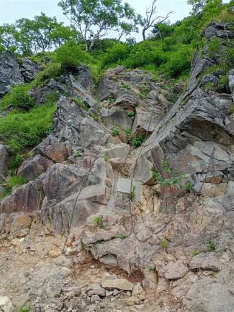
慎重に登る。
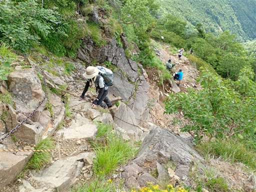
この岩場、お花畑が広がっている。
これまで樹林帯では全く花が無かったのに、ここにきて一気に花の道になる。
こちらはシナノオトギリ。鮮やかな黄色い花だ。
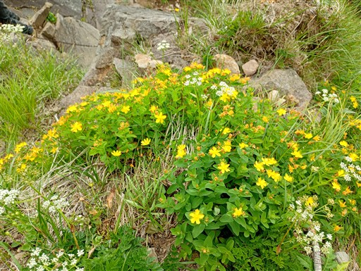
岩場は続く。思った以上に長い。
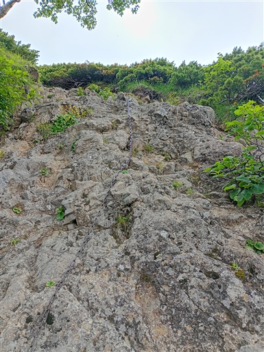
ウサギギク。数は多くないが少しだけ咲いている。
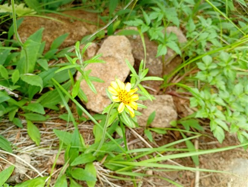
雲がどんどんと湧いてきて、視界は隠されつつある。
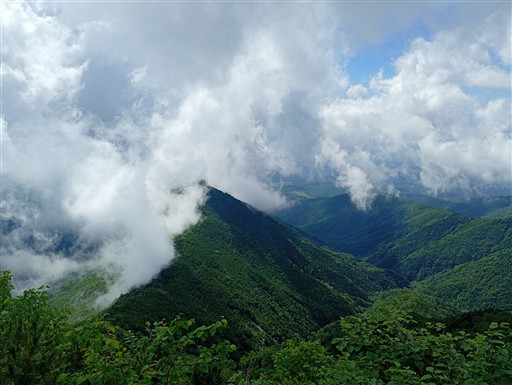
一方、頭上は青空が広がる。
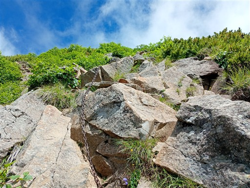
岩の斜面にも多くの花が咲いている。
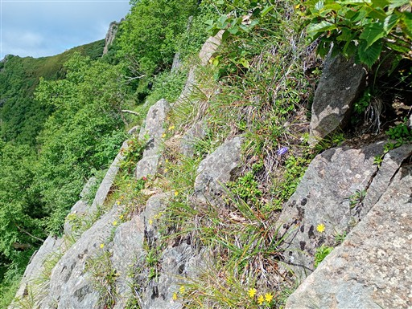
岩場を見下ろす。それなりの高度感。
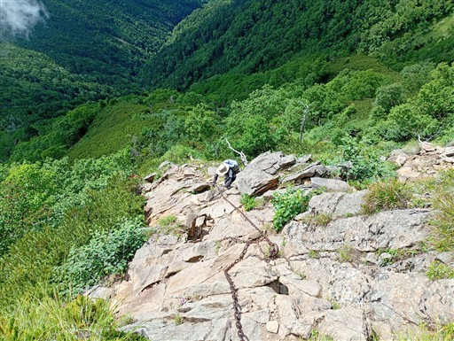
大天狗と権現岳。
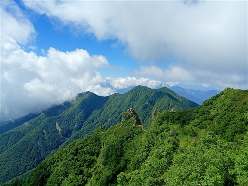
ミヤマコゴメグサ。
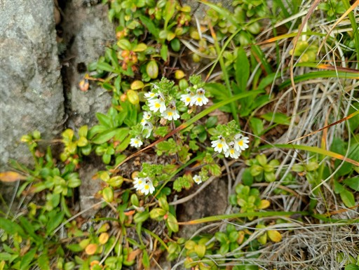
イブキジャコウソウ。岩場のあちらこちらに咲いている。
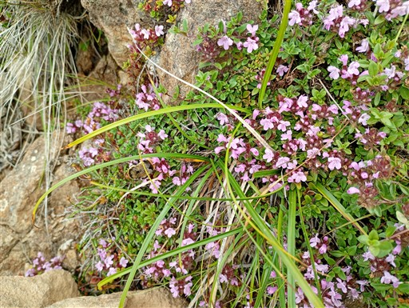
まだまだ続く岩場。登りはほとんど岩場だ。
傾斜は緩く、さほど難易度は高くない。
快適に登れるとても楽しい岩場だ。
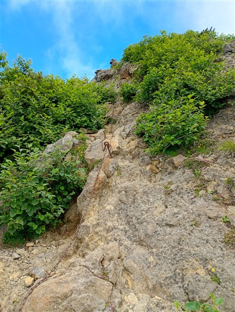
山頂が見えそうで見えない。もう、だいぶ近づいている。
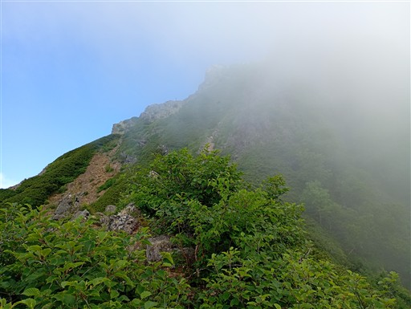
チシマギキョウもたくさん咲いている。
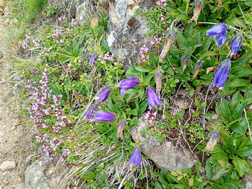
タカネツメクサ。
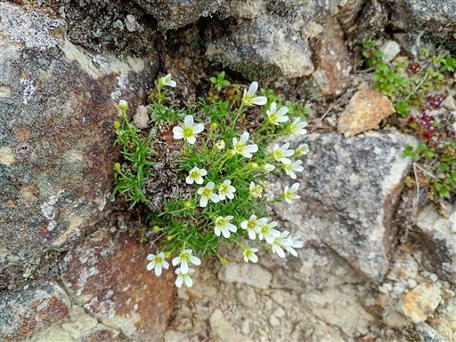
ミヤマダイコンソウ。
本当に様々な種類の花が咲き乱れている。見事なお花畑だ。
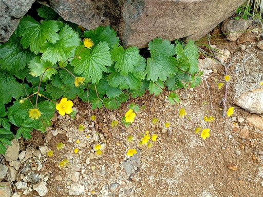
素晴らしい岩尾根。
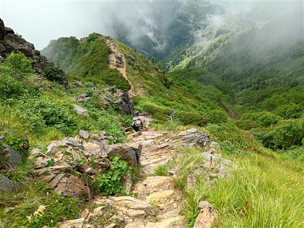
この辺りが最後の岩場。
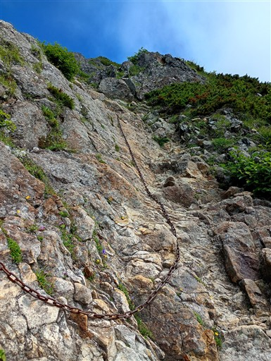
権現岳からの登山道と合流。
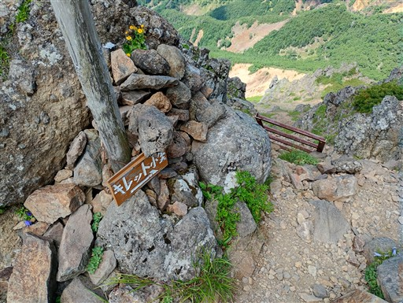
ここで阿弥陀岳が現れる。
こちら側の景色は開けないのかと思ったら、意外に晴れている。
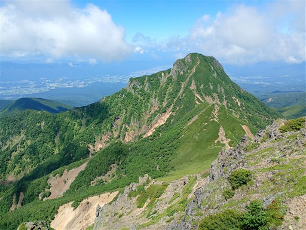
権現岳とそこに続く稜線。凄く魅力的な尾根だ。
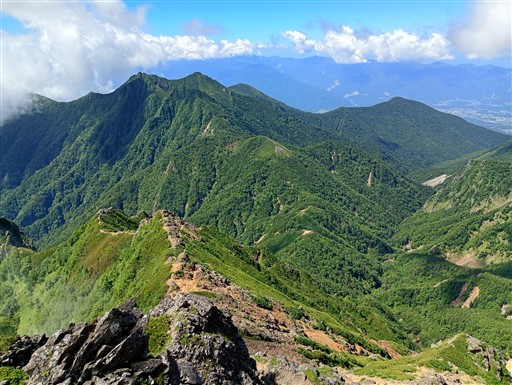
ここから赤岳まではすぐだ。
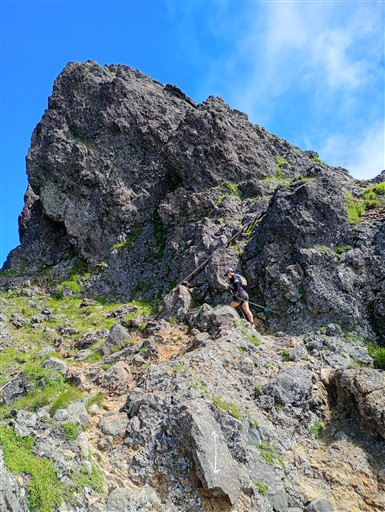
ハシゴを乗り越える。
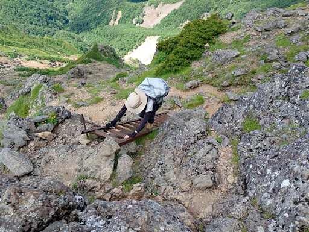
目指す山頂が見えてきた。
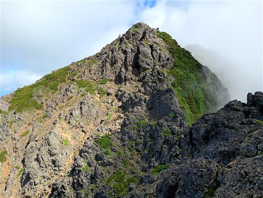
文三郎尾根コースとの合流点。こちらの登山道はすごく人が多い。
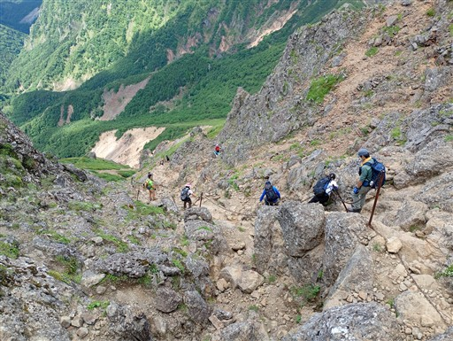
ここからもちょっとした岩尾根。8年前に息子と登った場所だ。
赤岳山頂に到着。標高2899m。
ものすごい人出で写真を撮るのも難しい。
お隣の赤岳頂上山荘周辺の方が落ち着いてそうなので、そちらに移動することにする。
赤岳頂上山荘。こちらは広いので、ここでゆっくりおやつ休憩。
目の前には阿弥陀岳。
赤岳方面。
横岳～硫黄岳～天狗岳～蓼科山。
夏山らしい素晴らしい景観。
山頂の混雑が少し緩和したので、再び山頂に行ってみる。
山頂標識を撮影。記念写真を撮ってもらって引き上げる。
下山は県界尾根。
斜面がざれていて結構下りにくい。
岩場なのだけど、真教寺尾根と違ってなんか歩きにくい。
下りだからか？
慎重に下る。前向きに下るか後ろ向きに下るか悩む微妙な傾斜。
赤岳展望荘と同じ標高になった。
この時は、あちらから登山道を付けてくれればよいのに、と思っていたのだが
地図を見たらちゃんと道があった。分岐点は見落とした。
このハシゴと鎖も歩きにくい。
やたらと揺れるハシゴ。
ゆるい傾斜の岩場が続く。
岩の下に穴が開いている。非常時にはビバークポイントとして役立ちそうだ。
最後のハシゴ＋鎖場。
この尾根は案外登りの人とすれ違った。
あとは樹林帯の中に入り、普通の登山道になる。
大天狗。
岩の上に頭のなくなった石像がある。
樹林帯の中の下りが延々と続く。
この石、自然の石なのだが何やら文字が彫られている。ちょっと読めないが。
小天狗近くにあった石柱。
歴史ある道なので、当時の信仰を思わせるものがところどころにある。
ここで県界尾根から外れて、清里に下る道に入る。
これまでのなだらかな尾根道とは打って変わって、かなりの急傾斜の道。
沢沿いに下りてくる。
そして現れる舗装路。ここからずっと舗装路…？
と思ったら土の道に戻ったりと、なぜか舗装路と土が代わる代わる現れる。
結構謎な道だ。
右側には巨大堰堤が次々と現れる。
サルオガセを発見。
ここで水の中を渡る。川幅が広いので水量が多いと苦しそうだ。
下の土管は何の役にも立ってなさそう。
緑の中の道を下っていく。
車道に出てくる。
清里テラスを通過。
ここから先も車道歩きが延々と続くが、通る車がすごく多い。
全て清里テラスに行っているようだ。あの天空のテラスは今頃大賑わいなのだろう。
美し森駐車場に戻ってくる。
本日は早朝から登り始められて、涼しくて快適な登山だった。
山頂は朝から雲に巻かれていたが、登ってみたらそれなりの展望が広がったのがありがたかった。
全体的に静かな登山だったが、山頂周辺だけは大賑わい。多くは美濃戸車中泊なのだろうか？
八ヶ岳にいはいろいろなルートがあるので、混雑を避けてあちらこちら行ってみたい。